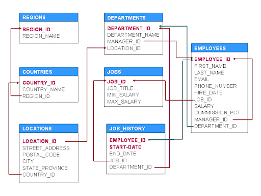
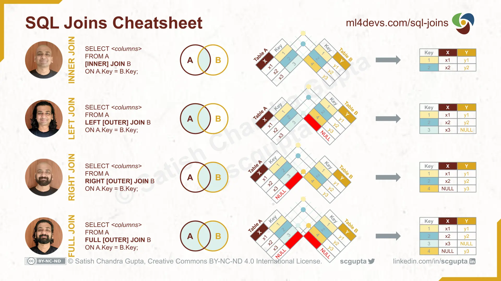
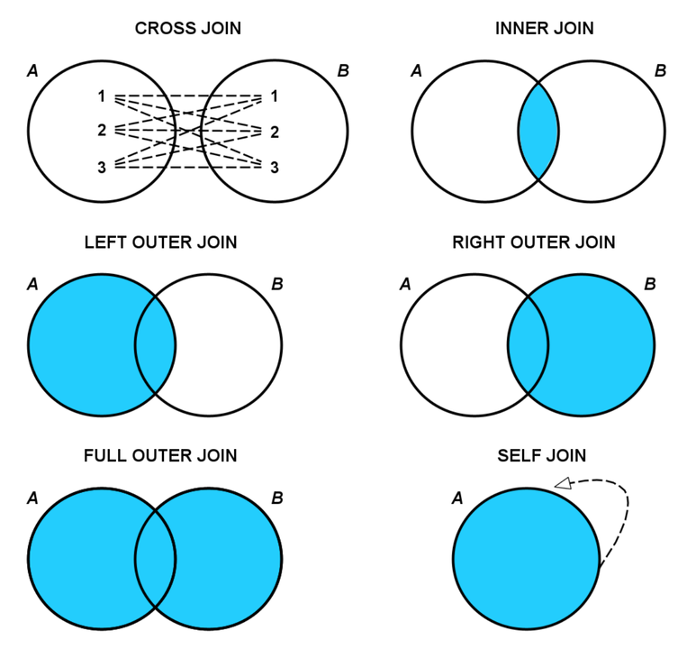

Lecture Note Week 2
Learning Objective:
LO1: Able to write SQL queries to retrieve data from a database
LO2: Able to write SQL queries to manipulate data in a database
LO3: Understand basic SQL syntax
SQL
Case sensitive? 🏋️
In SQL, case sensitivity largely depends on the specific database system and Operating System and its configuration. By default, SQL keywords (such as SELECT, FROM, WHERE) are case-insensitive across most SQL databases, including Oracle, MySQL, and SQL Server. This means you can write these keywords in uppercase, lowercase, or a mix of both without affecting the query’s execution. However, the case sensitivity of data within the tables, such as column names and string values, can vary.
For example, in Oracle SQL, string values are case-sensitive by default unless explicitly specified otherwise. This implies that a query differentiating between ‘Smith’ and ‘smith’ in a string comparison would yield different results. It is essential to be aware of your specific database system’s behavior regarding case sensitivity, and when necessary, functions like UPPER() or LOWER() can be used to ensure consistent case handling in string comparisons.
So, let’s stick to Oracle SQL (the most common database in corporate world) at this moment. In summary,
- column name is not case-sensitive
- SQL keywords are not case-sensitive
- character or string values are case-sensitive.
HR Schema Overview
The HR schema typically includes the following tables:
EMPLOYEESDEPARTMENTSJOBSJOB_HISTORYLOCATIONSCOUNTRIESREGIONS
The following examples will be using this HR schema.

SELECT Statement
The SELECT statement retrieves data from the database.
Syntax:
SELECT column1, column2, ...
FROM table_name;Example:
SELECT first_name, last_name
FROM hr.employees;This query retrieves the first_name and last_name columns from the EMPLOYEES table.
Please remember that hr. is the schema name. 👈
DISTINCT Keyword
The DISTINCT keyword returns only distinct values.
Syntax:
SELECT DISTINCT column1, column2, ...
FROM table_name;Example:
SELECT DISTINCT department_id
FROM hr.employees;This query retrieves unique department_id values from the EMPLOYEES table.
ORDER BY Clause
The ORDER BY clause sorts the result set in either ascending or descending order.
Syntax:
SELECT column1, column2, ...
FROM table_name
ORDER BY column1 [ASC|DESC], column2 [ASC|DESC], ...;Example:
SELECT first_name, last_name
FROM employees
ORDER BY last_name ASC;This query retrieves the first_name and last_name columns from the EMPLOYEES table and sorts the results by last_name in ascending order.
LIMIT Clause
In Oracle SQL, the FETCH FIRST clause limits the number of rows returned by a query.
Syntax:
SELECT column1, column2, ...
FROM table_name
ORDER BY column1 [ASC|DESC]
LIMIT number;Example:
SELECT first_name, last_name
FROM employees
ORDER BY last_name ASC
LIMIT 10;This query retrieves the first 10 rows from the EMPLOYEES table, sorted by last_name in ascending order.
COUNT Function
The COUNT function returns the number of rows that matches a specified condition.
Syntax:
SELECT COUNT(column_name)
FROM table_name WHERE condition;Example:
SELECT COUNT(employee_id) FROM employees WHERE department_id = 50;This query counts the number of employees in department 50.
WHERE Clause
The WHERE clause filters records.
Syntax:
SELECT column1, column2, ...
FROM table_name
WHERE condition;Example:
SELECT first_name, last_name
FROM employees
WHERE department_id = 50;This query retrieves the first_name and last_name columns from the EMPLOYEES table where department_id is 50.
LIKE Operator
The LIKE operator searches for a specified pattern in a column.
Syntax:
SELECT column1, column2, ...
FROM table_name
WHERE columnn LIKE pattern;Example:
SELECT first_name, last_name
FROM employees
WHERE first_name LIKE 'A%';This query retrieves the first_name and last_name columns from the EMPLOYEES table where the first_name starts with ‘A’.
IN Operator
The IN operator allows specifying multiple values in a WHERE clause.
Syntax:
SELECT column1, column2, ...
FROM table_name
WHERE columnN IN (value1, value2, ...);Example:
SELECT first_name, last_name
FROM employees
WHERE department_id IN (10, 20, 30);This query retrieves the first_name and last_name columns from the EMPLOYEES table where the department_id is either 10, 20, or 30.
ILIKE Operator
Oracle SQL does not have an ILIKE operator, but for case-insensitive searches, use the LOWER or UPPER functions with LIKE.
Syntax:
SELECT column1, column2, ...
FROM table_name
WHERE LOWER(columnN) LIKE LOWER(pattern);Example:
SELECT first_name, last_name
FROM employees
WHERE LOWER(first_name) LIKE 'a%';This query retrieves the first_name and last_name columns from the EMPLOYEES table where the first_name starts with ‘a’ or ‘A’.
Logical Operators
Logical operators combine multiple conditions in a WHERE clause. Common logical operators include AND, OR, and NOT.
Syntax:
SELECT column1, column2, ...
FROM table_name
WHERE condition1 AND condition2;Example:
SELECT first_name, last_name
FROM employees
WHERE department_id = 50 AND salary > 5000;This query retrieves the first_name and last_name columns from the EMPLOYEES table where the department_id is 50 and the salary is greater than 5000.
Aggregation Functions
Aggregation functions perform a calculation on a set of values and return a single value. Common aggregation functions include COUNT, SUM, and AVG.
COUNT Function
Syntax:
ELECT COUNT(column_name)
FROM table_name
WHERE condition;Example:
SELECT COUNT(employee_id)
FROM employees
WHERE department_id = 50;This query counts the number of employees in department 50.
SUM Function
The SUM function returns the total sum of a numeric column.
Syntax:
SELECT SUM(column_name)
FROM table_name
WHERE condition;Example:
SELECT SUM(salary)
FROM employees
WHERE department_id = 50;This query calculates the total salary of employees in department 50.
AVG Function
The AVG function returns the average value of a numeric column.
Syntax:
SELECT AVG(column_name)
FROM table_name
WHERE condition;Example:
SELECT AVG(salary)
FROM employees
WHERE department_id = 50;This query calculates the average salary of employees in department 50.
GROUP BY Clause
The GROUP BY clause groups rows that have the same values in specified columns into aggregate data.
Syntax:
SELECT column1, aggregate_function(column2)
FROM table_name
WHERE condition
GROUP BY column1;Example:
SELECT department_id, COUNT(employee_id)
FROM employees
GROUP BY department_id;This query counts the number of employees in each department.
HAVING Clause
The HAVING clause filters groups based on a specified condition.
Syntax:
SELECT column1, aggregate_function(column2)
FROM table_name
WHERE condition
GROUP BY column1
HAVING condition;Example:
SELECT department_id, COUNT(employee_id)
FROM employees
GROUP BY department_id
HAVING COUNT(employee_id) > 5;This query counts the number of employees in each department but only returns departments with more than 5 employees.
Table Join
Table joins in SQL allow you to combine rows from two or more tables based on a related column between them. Joins are essential for querying data that is spread across multiple tables in a relational database. The HR schema from Oracle provides a good basis for understanding joins, as it contains several related tables such as EMPLOYEES, DEPARTMENTS, JOBS, JOB_HISTORY, LOCATIONS, COUNTRIES, and REGIONS.
Types of Joins
INNER JOIN
LEFT JOIN (LEFT OUTER JOIN)
RIGHT JOIN (RIGHT OUTER JOIN)
FULL OUTER JOIN
CROSS JOIN
SELF JOIN


1. INNER JOIN
An INNER JOIN returns records that have matching values in both tables.
Syntax:
SELECT columns
FROM table1
INNER JOIN table2 ON table1.common_column = table2.common_column;`Example: Retrieve employees along with their department names.
SELECT e.first_name, e.last_name, d.department_name
FROM employees e
INNER JOIN departments d ON e.department_id = d.department_id;This query joins the EMPLOYEES table with the DEPARTMENTS table on the department_id column, returning only the rows with matching department_id values.
2. LEFT JOIN (LEFT OUTER JOIN)
A LEFT JOIN returns all records from the left table (table1), and the matched records from the right table (table2). If no match is found, NULL values are returned for columns from the right table.
Syntax:
SELECT columns
FROM table1
LEFT JOIN table2 ON table1.common_column = table2.common_column;Example: Retrieve all departments and their employees, including departments without employees.
SELECT d.department_name, e.first_name, e.last_name
FROM departments d
LEFT JOIN employees e ON d.department_id = e.department_id;This query joins the DEPARTMENTS table with the EMPLOYEES table, including all departments even if they have no employees.
3. RIGHT JOIN (RIGHT OUTER JOIN)
A RIGHT JOIN returns all records from the right table (table2), and the matched records from the left table (table1). If no match is found, NULL values are returned for columns from the left table.
Syntax:
SELECT columns
FROM table1
RIGHT JOIN table2 ON table1.common_column = table2.common_column;Example: Retrieve all employees and their department names, including employees without a department.
SELECT e.first_name, e.last_name, d.department_name
FROM employees e
RIGHT JOIN departments d ON e.department_id = d.department_id;This query joins the EMPLOYEES table with the DEPARTMENTS table, including all employees even if they don’t belong to a department.
4. FULL OUTER JOIN
A FULL OUTER JOIN returns all records when there is a match in either left (table1) or right (table2) table records. If there is no match, NULL values are returned for the non-matching side.
Syntax:
SELECT columns
FROM table1
FULL OUTER JOIN table2 ON table1.common_column = table2.common_column;Example: Retrieve all departments and their employees, including departments without employees and employees without departments.
SELECT d.department_name, e.first_name, e.last_name
FROM departments d
FULL OUTER JOIN employees e ON d.department_id = e.department_id;This query joins the DEPARTMENTS table with the EMPLOYEES table, including all departments and employees even if they don’t have matches.
5. CROSS JOIN
A CROSS JOIN returns the Cartesian product of the two tables, meaning it returns all possible combinations of rows.
Syntax:
SELECT columns
FROM table1
CROSS JOIN table2;Example:
Retrieve all possible combinations of employees and departments.
SELECT e.first_name, e.last_name, d.department_name
FROM employees e
CROSS JOIN departments d;This query combines each employee with every department, producing a large number of rows.
6. SELF JOIN
A SELF JOIN is a regular join, but the table is joined with itself.
Syntax:
SELECT a.columns, b.columns
FROM table a
INNER JOIN table b ON a.common_column = b.common_column;Example: Retrieve employees and their managers.
SELECT e.first_name AS Employee, m.first_name AS Manager
FROM employees e
INNER JOIN employees m ON e.manager_id = m.employee_id;This query joins the EMPLOYEES table with itself to find each employee’s manager.
Putting It All Together
Combining multiple concepts into a single query using the HR schema:
SELECT department_id, COUNT(employee_id) AS employee_count, AVG(salary) AS avg_salary
FROM employees
WHERE salary > 3000
GROUP BY department_id
HAVING COUNT(employee_id) > 3
ORDER BY avg_salary DESC
LIMIT 5;This query:
SELECT: Retrieves
department_id, the count ofemployee_idasemployee_count, and the averagesalaryasavg_salary.FROM: Queries the
EMPLOYEEStable.WHERE: Filters employees with a
salarygreater than 3000.GROUP BY: Groups the result by
department_id.HAVING: Filters groups having more than 3 employees.
ORDER BY: Orders the result by
avg_salaryin descending order.FETCH FIRST: Limits the result to the first 5 rows
🐹 Now you have learn the basic of SQL language, you might not realize that it actually follow a certain hierarchy pattern. 👇
SQL Statement Hierarchy
SELECT: Specifies the columns to retrieve.
FROM: Specifies the table(s) to query.
WHERE: Filters rows based on a condition.
GROUP BY: Groups rows sharing a property so that aggregate functions can be applied.
HAVING: Filters groups based on a condition.
ORDER BY: Sorts the result set.
FETCH FIRST: Limits the number of rows returned.
Graphic Representation
Example Query with Hierarchy
SELECT: Specifies the columns to retrieve. FROM: Specifies the table(s) to query. WHERE: Filters rows based on a condition. GROUP BY: Groups rows sharing a property so that aggregate functions can be applied. HAVING: Filters groups based on a condition. ORDER BY: Sorts the result set. FETCH FIRST: Limits the number of rows returned.
Let’s illustrate this hierarchy with an example query:
SELECT Country, COUNT(CustomerID) AS CustomerCount, AVG(LENGTH(CustomerName)) AS AvgCustomerNameLength
FROM Customers
GROUP BY Country
HAVING COUNT(CustomerID) > 2
ORDER BY AvgCustomerNameLength DESC
FETCH FIRST 5 ROWS ONLY;Explanation of the Query:
SELECT: Specifies the columns to retrieve: Country, the count of CustomerID as CustomerCount, and the average length of CustomerName as AvgCustomerNameLength.
FROM: Indicates the Customers table to query.
GROUP BY: Groups rows by the Country column.
HAVING: Filters groups to include only those with more than 2 customers.
ORDER BY: Sorts the results by AvgCustomerNameLength in descending order.
FETCH FIRST: Limits the number of rows returned to the top 5.